Le constat
Tu utilises un outil puissant sans méthode.
Et un outil puissant sans méthode, ça donne des résultats ponctuels et une déception durable.
Méthode CAP
Fais de Claude ton bras droit stratégique — même si tu n'as jamais codé. Regarde la vidéo, puis réserve ton diagnostic.
En résumé
Le constat
Et un outil puissant sans méthode, ça donne des résultats ponctuels et une déception durable.
La méthode
Le format
Le résultat
+14h
par semaine, en 30 jours. Les 30 jours sont le délai jusqu'au résultat, pas la durée de ton accès.
Ils l'ont fait
+10h gagnées par semaine
Salut Noé, globalement je passais mes vendredis à rattraper mes comptes-rendus d'entretien. Aujourd'hui ils sont rédigés pendant que je fais autre chose, et je me contente de relire. C'est un process parmi tant d'autres, mais c'est celui qui me fait gagner le plus de temps.
+14h gagnées par semaine
J'avais déjà testé l'IA, comme tout le monde, sans rien en tirer. La différence ici, c'est qu'on part de mon agenda réel, pas d'une démo. Au bout d'un mois, j'ai récupéré une journée et demie par semaine.
+15h gagnées par semaine
Rien que le fait de me poser et de cartographier avec Noé comment je travaille m'a fait un bien fou : une grosse partie de ma semaine partait dans des tâches que je pouvais confier. Aujourd'hui mes notes de cadrage sortent en une heure au lieu d'une journée. Le gain de temps est COLOSSAL.
La communauté en action
Des extraits réels des échanges entre membres.
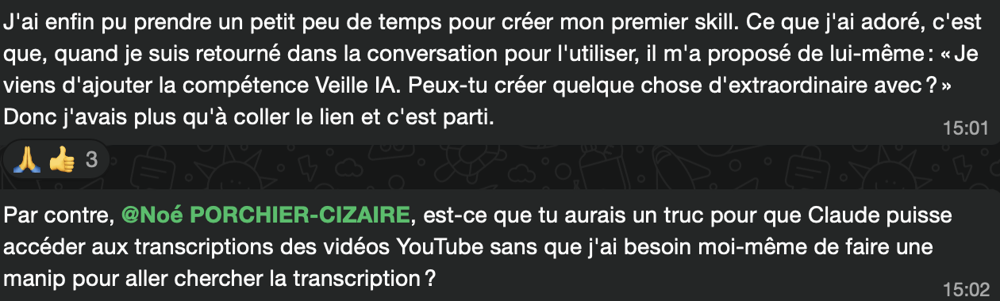
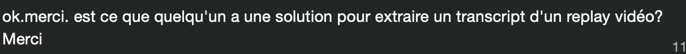
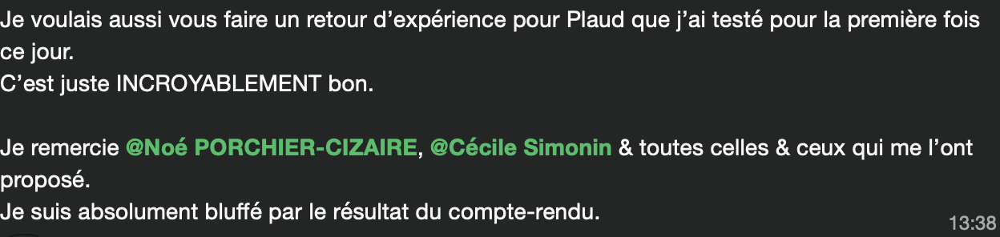
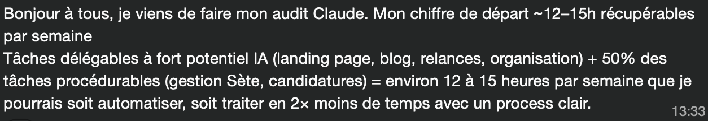
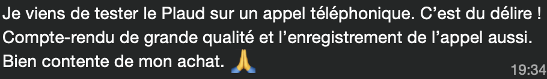
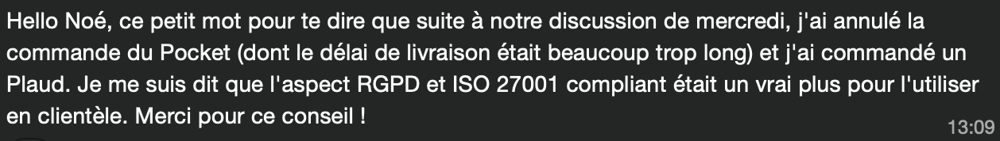
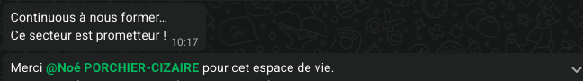
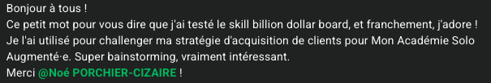
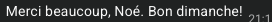
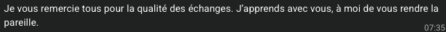
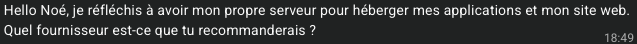
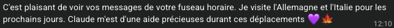
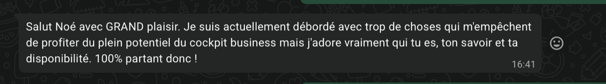
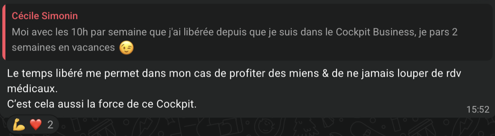
Le diagnostic
Pas ton projet, pas tes ambitions — ta semaine réelle, avec ce qui la remplit.
C'est le début du méta-audit, en version courte.
Que tu rejoignes Le Cockpit Business ou non.
Si à la fin de l'appel ce n'est pas pour toi, je te le dirai. Je préfère un « non » clair à un participant qui n'avancera pas.
La suite
01Continuer comme aujourd'hui : subir le volume, repousser ce qui compte, espérer que ça se libère tout seul.
02Ou consacrer 45 minutes à regarder où part vraiment ton temps.